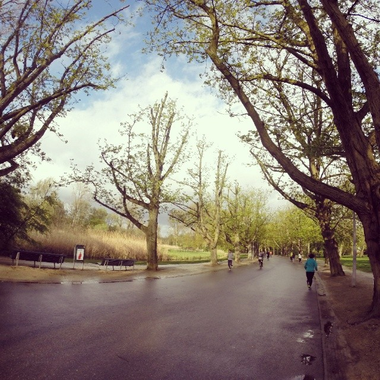
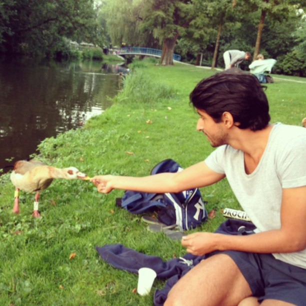
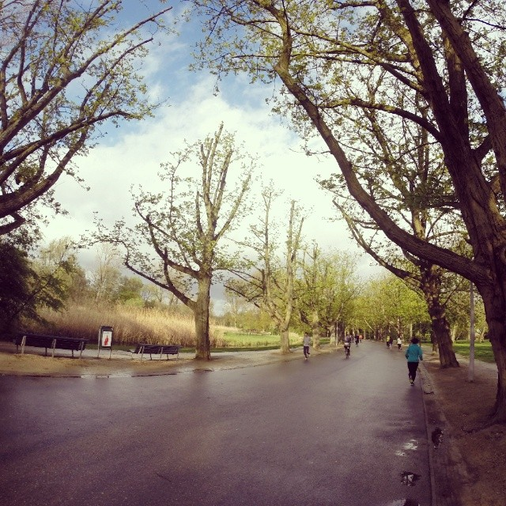
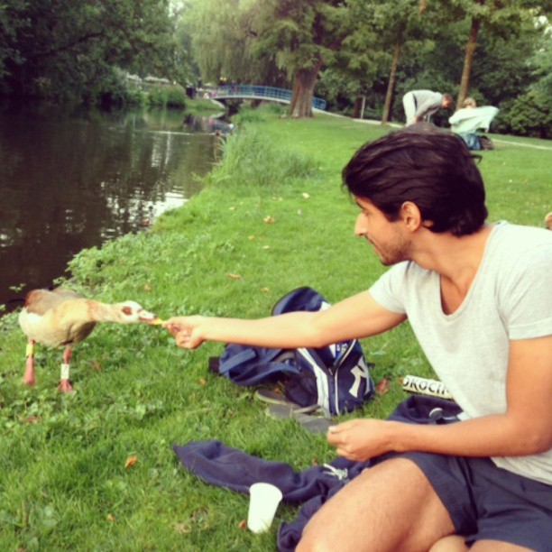
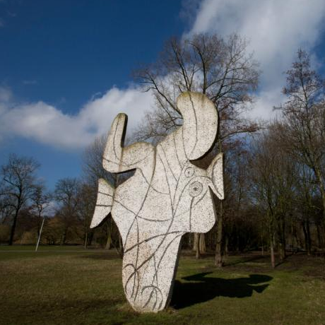
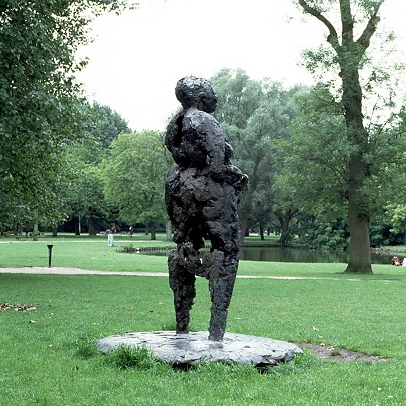
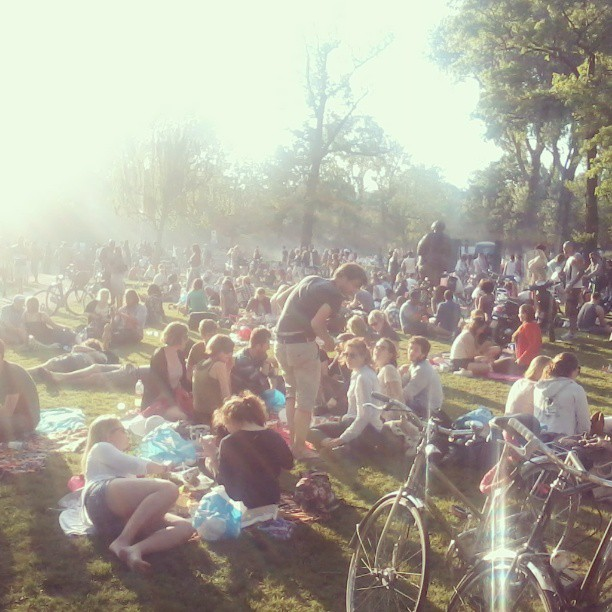
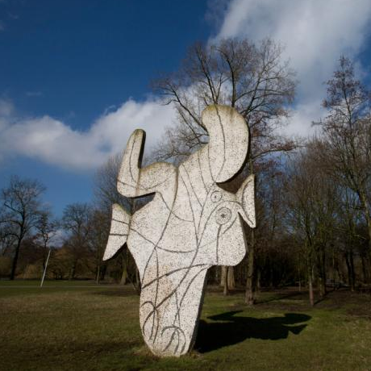
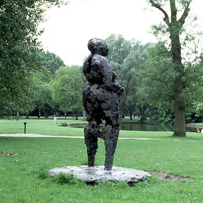
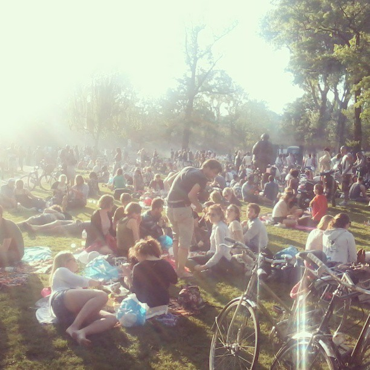

It is very likely that you have heard some unique stories about this neighbourhood and honestly, everything is probably true, The Red Light District leaves nothing to imagination. But to put rumours to rest, you have got to check it out for yourself.
The Rossebuurt, as the locals know it, is unlike any other place, undoubtedly. The Red Light District in Amsterdam that everyone knows about is the one where women, of all nationalities, expose their goods in red-fringed window parlours, many ready to offer more than a school boy peep-show in a private cabin.
Another familiar image of the Amsterdam Red Light District is of packs of men, young and old, couples holding hands and pointing in shock, giggling groups of women celebrating a fun night, and busloads of Japanese tourists toting cameras (except not in the direction of the female entertainers! Strictly banned!). This is proof enough that the Red Light District deserves a visit.

 



 




